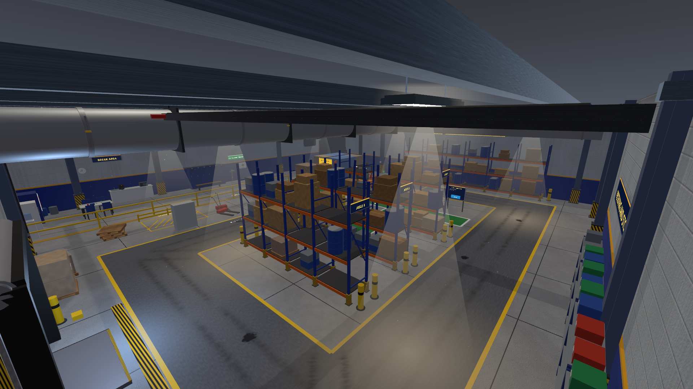
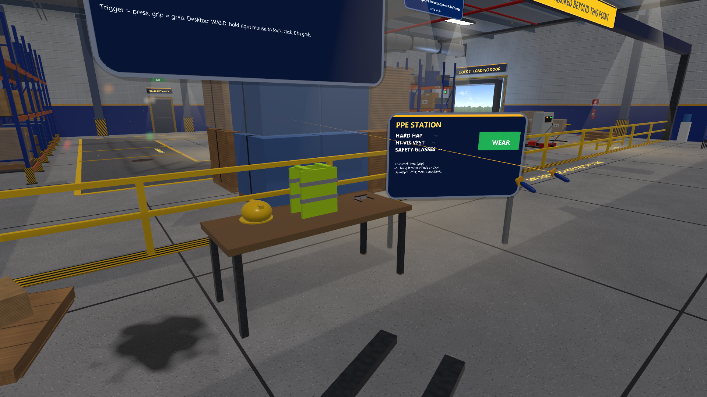
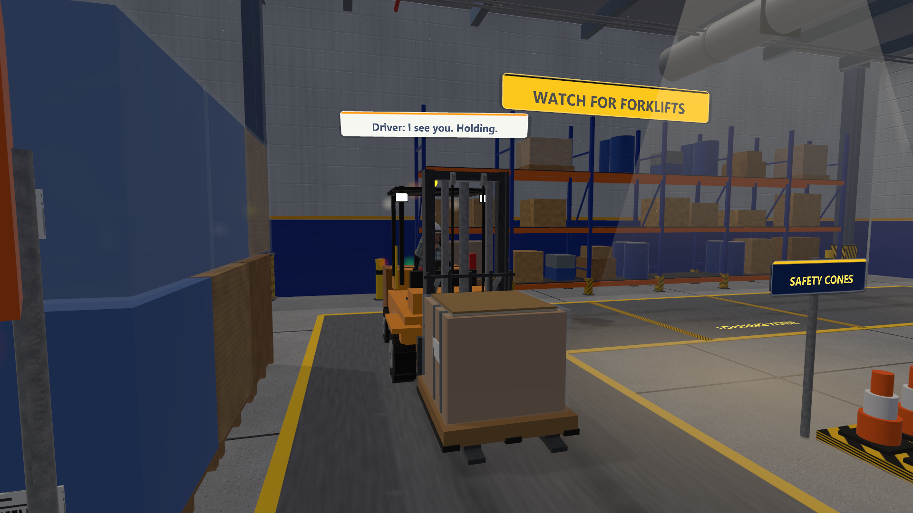
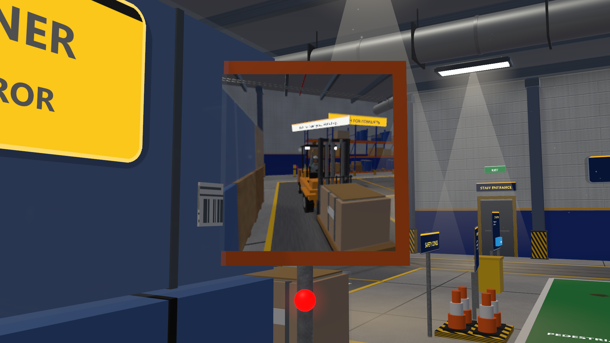
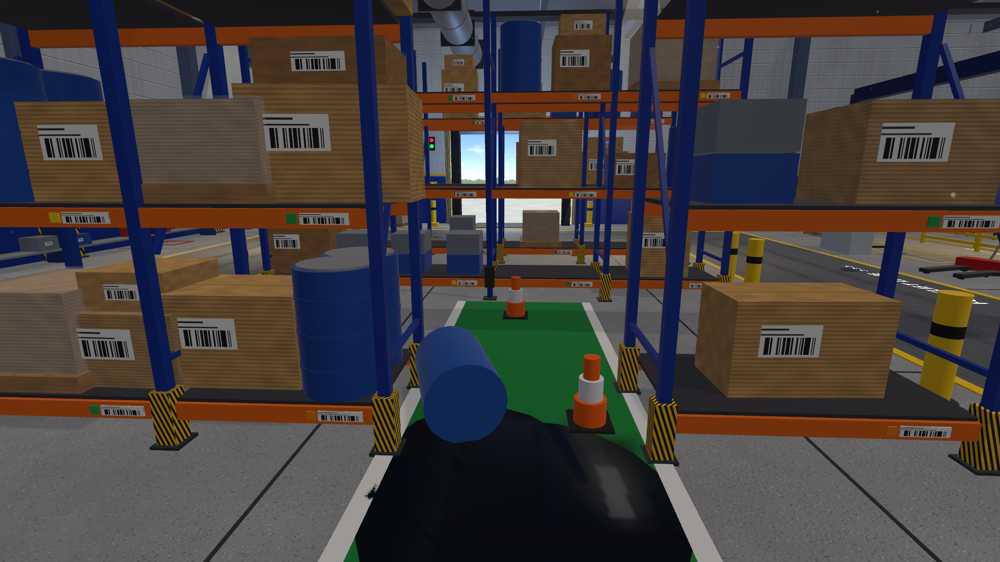

Unity hub scenes (editor renders, round 5 after) 9 images
Lobby, Hydro, Refinery, Warehouse, Resistor in the hub project.
Unity 01 Hydrostatic Test Bay 17 images
Standalone Vive project.
Unity 02 Refinery Rounds 20 images
Standalone Vive project (re-baked Nov 6).
Unity 03 Warehouse Forklift 21 images
Standalone Vive project.

01-warehouse-overview.png
2026-11-06 01:31
02-ppe-station.png
2026-11-06 01:31
03-crossing-forklift-stopped.png
2026-11-06 01:31
04-corner-mirror.png
2026-11-06 01:31
05-hazard-markers.png
2026-11-06 01:3106-near-miss.png
2026-11-06 01:3107-start-view.png
2026-11-06 01:3108-blind-corner-sign.png
2026-11-06 01:3109-cone-station.png
2026-11-06 01:3110-coworker-appears.png
2026-11-06 01:3111-awareness-check.png
2026-11-06 01:3112-coworker-behind-forklift.png
2026-11-06 01:3113-summary.png
2026-11-06 01:3114-why-this-matters.png
2026-11-06 01:3115-racking-aisle.png
2026-11-06 01:3116-forklift-closeup.png
2026-11-06 01:3117-dock-and-staging.png
2026-11-06 01:3118-break-area.png
2026-11-06 01:3119-light-shafts.png
2026-11-06 01:3120-lockers-first-aid.png
2026-11-06 01:3121-coworker-closeup.png
2026-11-06 01:31Unity 04 Resistor Bench 15 images
Standalone Vive project.
01-bench-overview.png
2026-11-06 01:3102-esd-station.png
2026-11-06 01:3103-color-code-reading.png
2026-11-06 01:3104-measuring.png
2026-11-06 01:3105-led-lit.png
2026-11-06 01:3106-burnt-led-mistake.png
2026-11-06 01:3107-wall-references.png
2026-11-06 01:3108-why-this-matters.png
2026-11-06 01:3109-rationale-question.png
2026-11-06 01:3110-rationale-feedback.png
2026-11-06 01:3111-parts-closeup.png
2026-11-06 01:3112-instrument-cart.png
2026-11-06 01:3113-shelves-and-drawers.png
2026-11-06 01:3114-task-lamp-breadboard.png
2026-11-06 01:3115-room-wide.png
2026-11-06 01:31 Circuit Lab and Safety Lab v2 (web, Quest) 7 images
Desktop Chrome and an emulated Quest 3.
v2-circuit-lab-bulb.png
2026-11-07 02:17v2-circuit-lab-closeup.png
2026-11-07 02:17v2-circuit-lab-desktop.png
2026-11-07 02:17v2-circuit-lab-quest.png
2026-11-07 02:17v2-safety-lab-closeup.png
2026-11-07 02:17v2-safety-lab-desktop.png
2026-11-07 02:17v2-safety-lab-quest.png
2026-11-07 02:17 Circuit Lab and Safety Lab v1 (web, Quest) 11 images
The original labs, kept.
circuit-lab-avatars.png
2026-11-03 08:40fallback-no-models.png
2026-11-03 08:44hydrotest-empty.png
2026-11-03 08:41hydrotest-rig-client2.png
2026-11-03 08:43hydrotest-rig.png
2026-11-03 08:41multiplayer-ar.png
2026-11-03 08:41multiplayer-vr.png
2026-11-03 08:40 site-safety-avatars.png
site-safety-avatars.png
2026-11-03 08:41test-bay-avatars.png
2026-11-03 08:41vr-toolbox-circuits.png
2026-11-05 23:41vr-toolbox-safety.png
2026-11-05 23:41 Fieldwork XR Practice Lab (web) 32 images
Three.js, 12 hands-on scenarios.
01-welcome.png
2026-11-03 19:4102-catalog.png
2026-11-03 19:4103-scenario-1-welcome-a-walk-in.png
2026-11-03 19:4103-scenario-10-clean-windows-on-a-skyscraper.png
2026-11-03 19:4303-scenario-11-weld-safely.png
2026-11-03 19:4303-scenario-12-electrical-isolation-and-work.png
2026-11-03 19:4303-scenario-13-sample-and-test-a-lighter-lot.png
2026-11-03 19:4303-scenario-14-hydrostatic-test-of-a-heat-exchanger.png
2026-11-03 19:4403-scenario-15-weld-a-refinery-pipe-spool.png
2026-11-03 19:4403-scenario-16-select-and-check-a-resistor.png
2026-11-03 19:4403-scenario-17-circulation-builder.png
2026-11-03 19:4503-scenario-2-make-a-safe-work-area.png
2026-11-03 19:4203-scenario-3-check-an-incoming-delivery.png
2026-11-03 19:4203-scenario-4-invite-a-participant.png
2026-11-03 19:4203-scenario-5-track-a-research-sample.png
2026-11-03 19:4203-scenario-6-record-a-field-observation.png
2026-11-03 19:4203-scenario-7-work-at-height.png
2026-11-03 19:4203-scenario-8-run-a-unit-from-the-control-room.png
2026-11-03 19:4203-scenario-9-outdoor-rounds-at-the-battery-limits.png
2026-11-03 19:4304-feedback.png
2026-11-03 19:4505-complete.png
2026-11-03 19:4506-critical-miss.png
2026-11-03 19:4507-industrial-result.png
2026-11-03 19:4608-circulation-catalog.png
2026-11-03 19:4608-circulation-misconception.png
2026-11-03 19:4608-circulation-result.png
2026-11-03 19:4708-circulation-task2-pulmonary.png
2026-11-03 19:4608-circulation-task4-colouring.png
2026-11-03 19:4709-why-this-matters.png
2026-11-03 19:4710-reasoning-question.png
2026-11-03 19:4811-reasoning-feedback.png
2026-11-03 19:4812-result-with-reasoning.png
2026-11-03 19:48